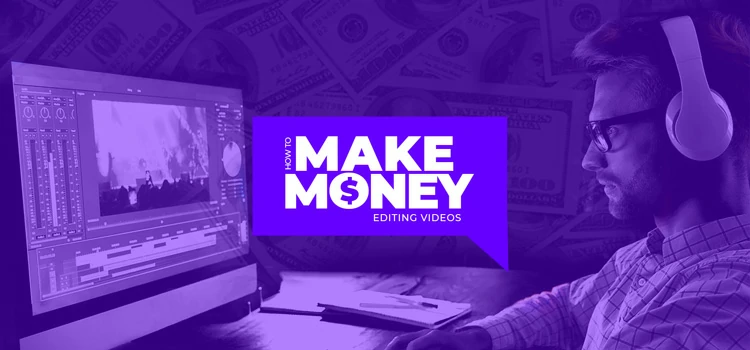

How Can You Use Editing to Make Money?
Main Jobs for Editing
There are many methods to make money with editing skills. Some of the main professions in this field are video editors for companies/agencies, as well as editors for social media accounts(mainly youtube, instagram, and tiktok), and graphic/motion graphic designers for corporate/marketing firms. Many people earn $70,000-100,000 annual incomes in these jobs, and depending on your skill and desirability you can push those numbers even further.

Side Hustles with Editing
Personally, I have made about $9,000 in simple side hustles while enjoying my hobby of editing. There are methods that have requirements like the tiktok creator program and youtube monetization where you need a certain amount of followers or view time to qualify. These 2 social media platforms will pay you based on the views your videos get and can be incredibly lucrative with the right approach. Other mediums like Payhip (I linked my payhip store here to show an example of the site) can be used to sell presets made on apps like Premiere Pro and After Effects to people who want to edit like you do.